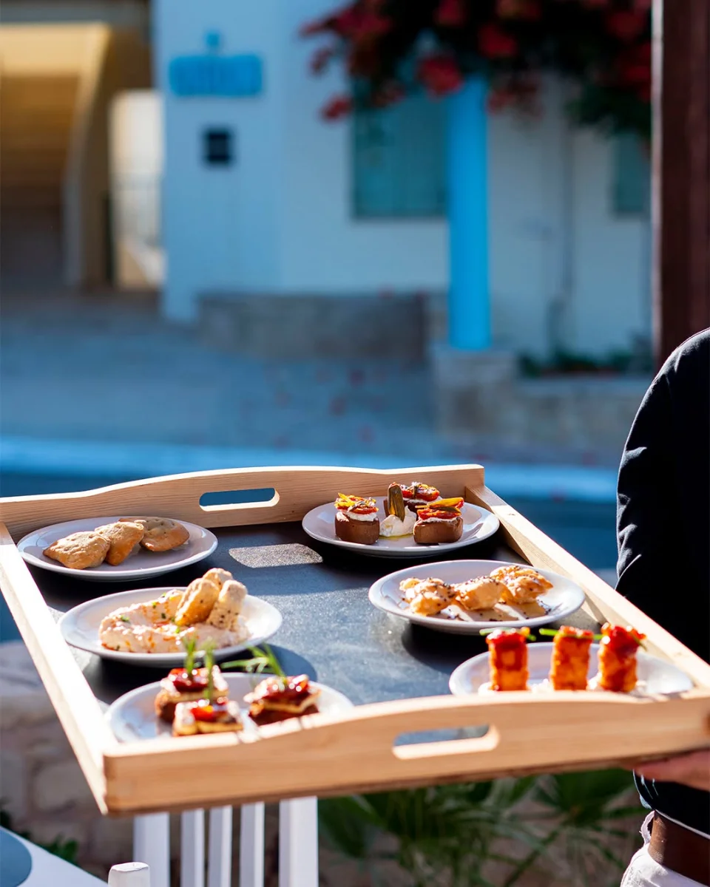
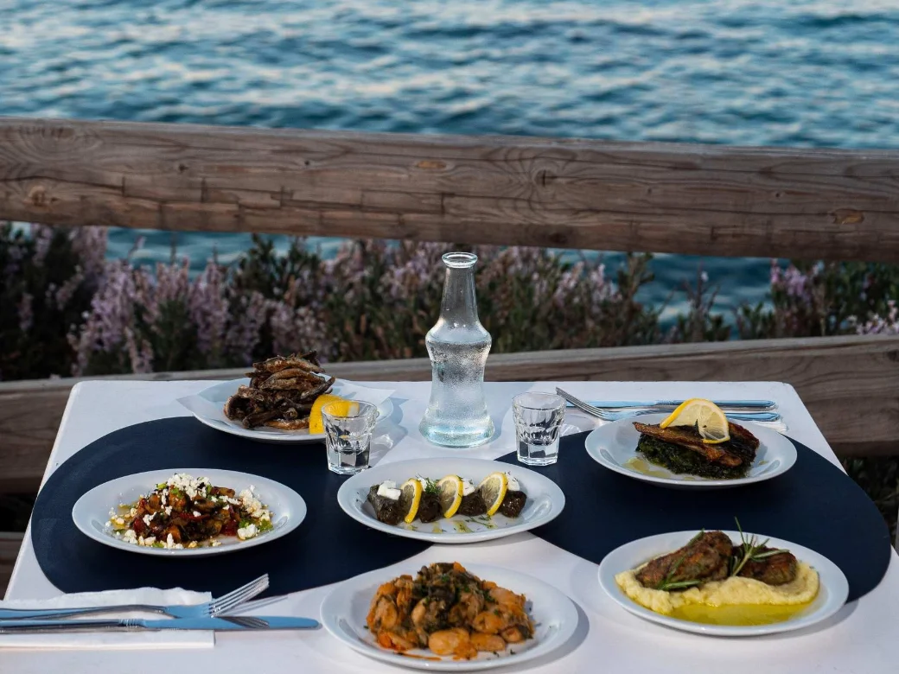
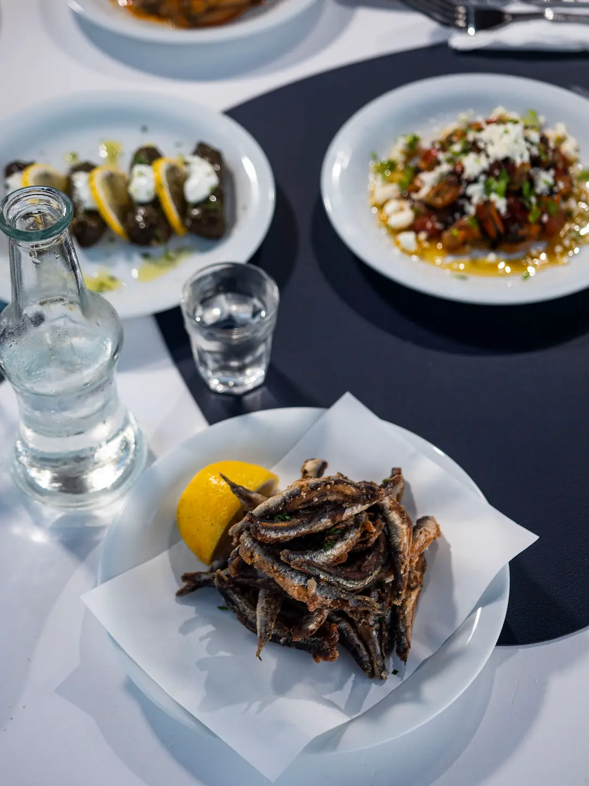
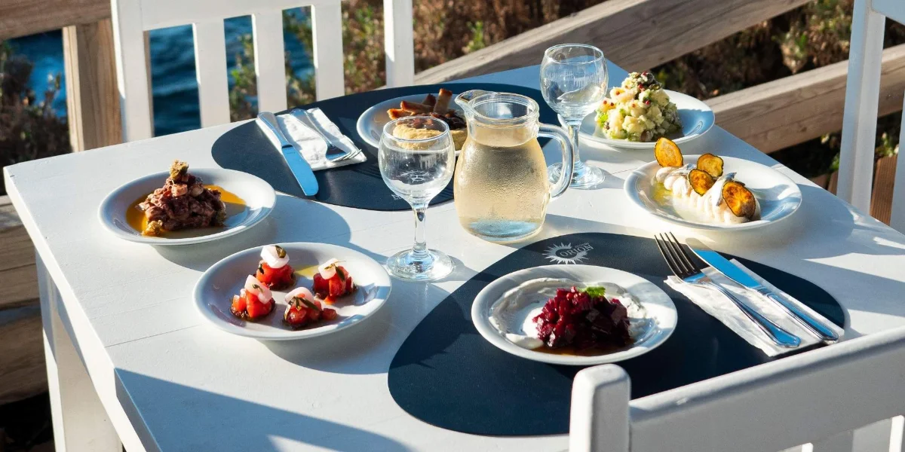
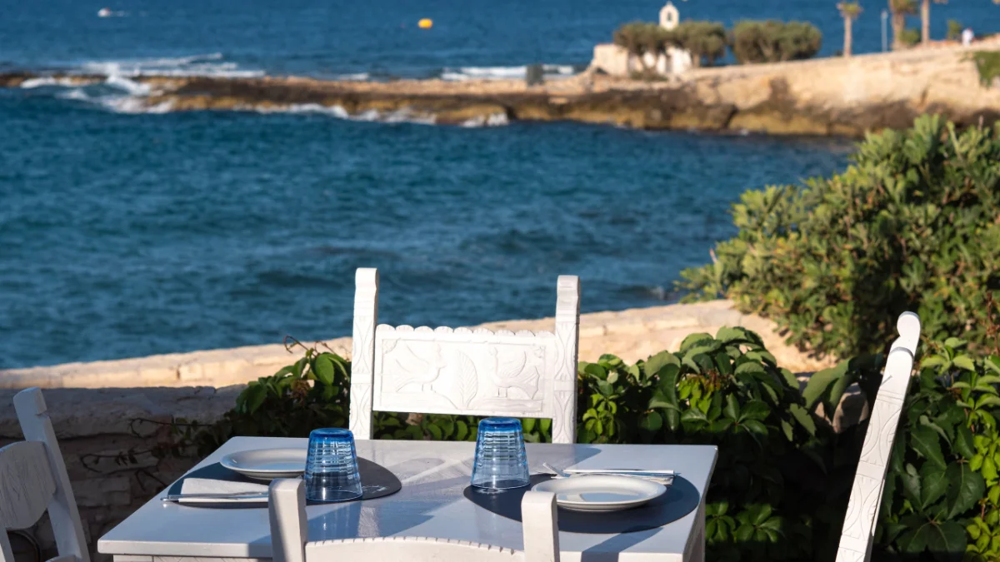
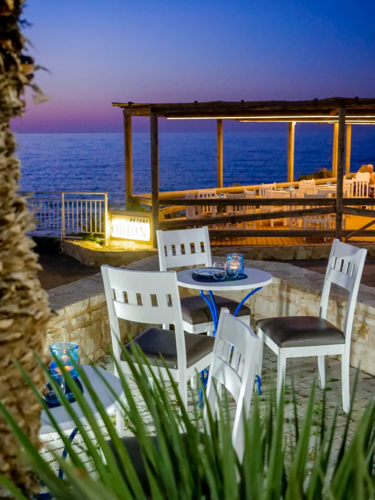
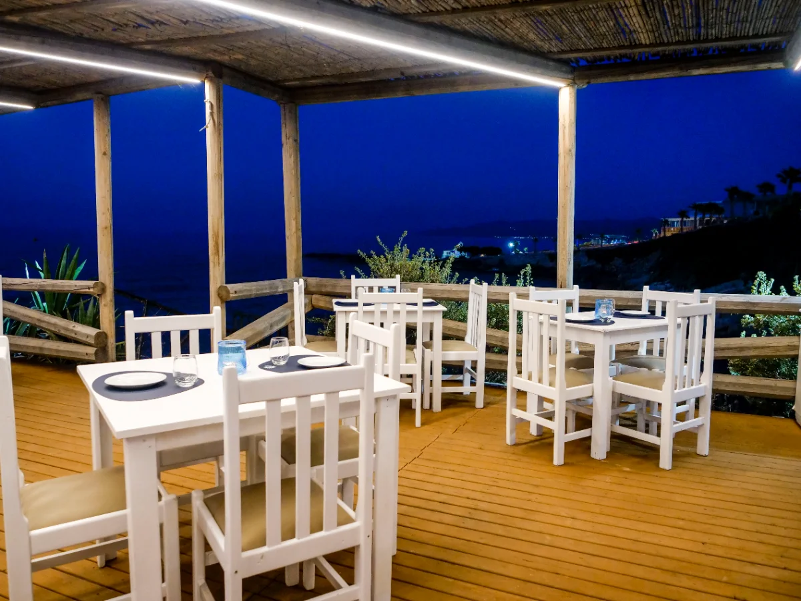

By the water
Made for sharing.
Cretan flavours, Aegean light and evenings that are never rushed.
Everything arrives in the middle of the table. Nothing is plated for one person. You reach across, you pass things along, you argue a little over the last piece — that is rather the point of it.

The Orion ritual
One bottle.
Six plates.
Choose your bottle and six plates from those prepared that day. Order another, and the table begins again.
There is no long list to work through. What is good today is what comes out today, and it shifts with the season and with whatever the boats brought in.

Meze and raki
Small plates,
long evenings.
Greek, Cretan and Mediterranean cooking, and a wide range of mezedes to go with wine, ouzo or raki.
The carafes come out of the freezer still frosted. Bread, good oil, oregano, and whatever the kitchen happens to be proud of that afternoon.

After sunset
The rhythm of a Cretan evening.
The light drops behind the headland, the moon comes up over the Cretan sea, and the water keeps talking below the terrace.
Some evenings there is live music. Otherwise it is just the sea, the glasses, and whoever you came with — which is usually enough.



Visit Orion
Contact Us
Find us at Hersonissos, the most cosmopolitan corner of Crete and about 25 km from Heraklion. Come for an early plate while it is still bright, or later, when the terrace has filled up.
- Address
- Kallergi 8
Chersonisos, Crete 700 14 - Open daily
- 3 – 11 PM
- Telephone
- +30 2897 025030
- info@orionouzeri.gr
Outdoor seating · Live music · Wi‑Fi